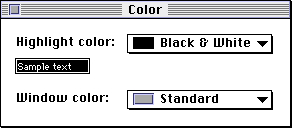
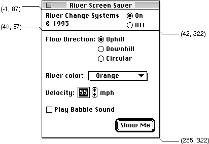

Legacy Document
Important: The information in this document is obsolete and should not be used for new development.
Important: The information in this document is obsolete and should not be used for new development.


Creating a Control Panel's Resources
The following sections describe the required and optional resources that you supply for your control panel. The first section contains general information that applies to all of the individual resources. Later sections discuss each of the required resources and some optional resources.Resource IDs for Control Panels
Every resource has a resource ID. With one exception, all resource IDs for control panel resources, including standard resources and resources you define yourself, must be in the range of -4064 through -4033. The exception is the resource for the icon help balloon ('hfdr') resource, whose resource ID is -5696.Of this range, resource IDs from -4064 through -4049 are reserved for standard resources and some optional resources.
You can assign resource IDs in the range -4048 through -4033 to any private resources that you define for your control panel.
- Note
- You can use a high-level tool such as the ResEdit application, which is available through APDA, to create your resources. (See ResEdit Reference for details on using ResEdit.) You can also use the Rez utility.

Defining the Control Panel Rectangles
Your control panel can consist of one rectangle, as in Figure 8-8, or several (see Figure 8-2 on page 8-6 and Figure 8-6 on page 8-13). You define these rectangles in a rectangle positions ('nrct') resource. You specify in this resource the number of rectangles for your control panel and a list of the coordinates for each rectangle. You must specify a resource ID of -4064 for a rectangle positions resource.Figure 8-8 The Color control panel
 In the rectangle positions resource you specify a rectangle' s coordinates in this order: top, left, bottom, and right. Although you can define a control panel of any size (limited only by the screen display), you must specify the coordinates (-1,87) as the origin (upper-left point) of the upper-left rectangle. To provide for backward compatibility with the Control Panel desk accessory, the Finder accepts only these coordinates as the origin of a control panel. If you are designing for System 7 only, you can extend the bottom and right edges of a control panel as far as you like. If you want your control panel to run in System 7 and previous versions of system software, you must limit your control panel's size to the area bounded by (-1,87,255,322). These are the coordinates used by the Control Panel desk accessory.
If you want to make your control panel backward compatible, remember that the Control Panel desk accessory draws a frame that is 2 pixels wide around each rectangle. To join two parts of a panel neatly, overlap their rectangles by 2 pixels on the side where they meet.
- The Control Panel Desk Accessory
- In System 6, the Control Panel desk accessory is a single interface shared by all control panels. It has two parts: a scrollable list of icons representing the control panels a user can open as part of the desk accessory and a display area of fixed size. If you want to make your control panel compatible with the Control Panel desk accessory, it must fit in this area. The Control Panel desk accessory acts as a driver interfacing with and managing the control panels whose icons it displays. All of the control panels represented by icons in the scrollable list share the same display area. For this reason, a user can open only one control panel at a time.
Figure 8-9 shows the coordinates of the two rectangles that make up the River control panel. Because the River control panel has relatively few items, they fit well within the space constraints imposed by the Control Panel desk accessory. Thus, this control panel can run in both the Finder in System 7 and the Control Panel desk accessory in System 6.
Figure 8-9 Coordinates defining the rectangles of the River control panel display area
 Listing 8-1 shows the Rez input for the rectangle positions resource that specifies the rectangles for the River control panel.
Listing 8-1 Rez input for a rectangle positions list (
'nrct') resource
resource 'nrct' (-4064, purgeable) { { /*array RectArray: 2 elements*/ /*[1]*/ {-1, 87, 42, 322}, /*[2]*/ {40, 87, 255, 322} } };If you define two or more rectangles that together do not form a complete square or rectangle in relation to the bounding dialog box that the Finder creates, the Finder fills in any blank space on the control panel with a gray pattern.
- Note
- In System 6, the Control Panel desk accessory first fills in the area defined by the coordinates (-1,87,255,322) with a gray background pattern. It then creates white areas corresponding to the rectangles you define. In these, it draws the items of your control panel. The Control Panel desk accessory outlines the rectangles with a 2-pixel-wide frame.
Creating the Item List Resource
You define the items in your control panel and their positions within its rectangles using an item list ('DITL') resource. These items can include static text, buttons, checkboxes, radio buttons, editable text, the resource IDs of icons and QuickDraw pictures, and
the resource IDs of other types of controls, such as pop-up menus. You must specify a resource ID of -4064 for your control panel's item list resource.An item list contains a display rectangle for each item. A display rectangle determines the size and location of the item. You must specify the coordinates of an item's display rectangle relative to the origin of the control panel's upper-left rectangle.
Recall that the origin (the point at the extreme upper left) of your control panel must coincide with the coordinates (-1,87). In the Control Panel desk accessory, the origin is at the upper left of the rectangle containing the scrollable list of icons, to the left of the display area. A 2-pixel-wide frame borders the rectangle containing the scrollable list of icons.
Listing 8-7 shows the item list resource for the River control panel. Notice that the item list includes a static text item (item 2) giving the control panel's name and copyright. The upper-left point of the display rectangle for the static text lies at the coordinates (4,95).
In Listing 8-7, some items are defined as enabled and some as disabled. By specifying each item in the item list as enabled or disabled, you inform the Dialog Manager whether or not to report user clicks in the item.
Depending on the type of item, you usually provide a text string or a resource ID for the item.
Note that text in a control panel is defined either as part of a control (such as labels for buttons, checkboxes, radio buttons, and pop-up menus), or as separate items (static text, editable text, or user items). For example, the text "River color" is defined as part of a pop-up control in a separate menu resource and the text "mph" is defined as a static text item.
The item list resource for the River control panel defines text that is not provided by a control as static text items; in addition to the product name, these static text items include "Flow Direction:" and "Velocity:" (see Figure 8-6 on page 8-13). The item list resource defines one editable text item, setting the default text for this item to 55. It also defines the editable text item as disabled. If you define an editable text item as disabled, the Dialog Manager and TextEdit handle user input in the editable text item.
In Listing 8-7, the first item in this resource is an enabled button labeled "Show Me." This is the River control panel's default button. (The Control Manager positions the label inside the button and draws it using the system font.) Notice that the outline around the button, which identifies it as the default button, is defined as a separate item (a disabled user item) toward the end of the listing.
- IMPORTANT
- If you want to use a font other than the default application font for
your control panel's text and you want your control panel to run in the Control Panel desk accessory of System 6, you must define the text as user items instead of static text items. For more information on this, see "Defining Text in a Control Panel as User Items" on page 8-24.
All of the other controls with which the user interacts are defined as enabled--the On and Off radio buttons, the radio buttons beside the label Flow Direction, the Play Babble Sound checkbox, and the River color pop-up control. When these controls are active, the user can click them, changing settings and making selections. The up and down arrows are defined as enabled user items, and the item list resource includes a picture item that refers to a resource containing a QuickDraw picture of the arrows. Finally, the item list resource includes a help item referencing the resource ID that defines the help balloons for the River control panel.
Listing 8-2 Rez input for an item list (
'DITL') resource
resource 'DITL' (rControlPanelDialog, purgeable) { { /*array: 18 elements*/ /*[1]*/ {219, 237, 239, 308}, Button { enabled, "Show Me" }, /*[2]*/ {4, 95, 44, 247}, StaticText { disabled, "River Change Systems\n© 1993" }, /*[3]*/ {2, 254, 21, 302}, RadioButton { enabled, "On" }, /*[4]*/ {22, 254, 40, 302}, RadioButton { enabled, "Off" }, /*[5]*/ {51, 95, 70, 196}, StaticText { disabled, "Flow Direction:" }, /*[6]*/ {50, 197, 68, 303}, RadioButton { enabled, "Uphill" }, /*[7]*/ {69, 197, 87, 303}, RadioButton { enabled, "Downhill" }, /*[8]*/ {88, 197, 106, 303}, RadioButton { enabled, "Circular" }, /*[9]*/ {157, 95, 178, 156}, StaticText { disabled, "Velocity:" }, /*[10]*/ {156, 162, 172, 180}, EditText { disabled, "55" }, /*[11] (up arrow)*/ {150, 184, 162, 201}, UserItem { enabled, }, /*[12] (down arrow)*/ {163, 184, 175, 201}, UserItem { enabled, }, /*[13] (picture of up/down arrows)*/ {150, 184, 175, 201}, Picture { disabled, -4048 }, /*[14]*/ {157, 202, 176, 242}, StaticText { disabled, "mph" }, /*[15] (outline around default button)*/ {212, 231, 247, 314}, UserItem { disabled, }, /*[16]*/ {188, 95, 208, 241}, Checkbox{ enabled, "Play Babble Sound" }, /*[17] (title & menu items defined by menu w/res ID mPopUp)*/ {122, 92, 142, 297}, Control { enabled, mPopUp }, /*[18] get help balloon information from 'hdlg' resource*/ {0,0,0,0}, HelpItem { disabled, HMScanhdlg /*scan resource type--'hdlg' or 'hrct'*/ {-4064} } } };For complete information on creating an item list resource, see the chapter "Dialog Manager" in Inside Macintosh: Macintosh Toolbox Essentials.Defining the Icon for a Control Panel
You create an icon family to specify the icon that the Finder uses to represent your control panel file. The icon family resources are'ICN#','ics#','icl8','icl4','ics8', and'ics4'. You must specify a resource ID of -4064 for the icon family resources of a control panel and mark these resources as purgeable. If you provide the complete icon family, the Finder displays the appropriate icon family member according to the bit depth of the monitor. For more information on these icons, see the chapter "Finder Interface" in Inside Macintosh: Macintosh Toolbox Essentials.Specifying the Machine Resource
When the user opens your control panel, the Finder reads your machine ('mach') resource from your control panel file. Depending on the value you specify in the machine resource, the Finder takes one of two actions: (1) calls your control device function, directing your function to check the current hardware and software configuration to determine whether your control panel can run on the current system;
or (2) performs the check itself. You must specify a resource ID of -4064 for a machine resource.The machine resource consists of a hard mask and a soft mask. The Finder handles the check if you set these masks to values indicating that your control panel runs on all systems or to values representing the requirements for your control panel; the Finder checks the current configuration in the latter case. If the Finder handles the check, it never calls your control device function with a
macDevmessage; instead, the Finder calls your function for the first time with an initialization message. If the Finder determines that your control panel cannot run on the current system, the Finder displays an alert box to the user and does not open the control panel. (In System 6, the Control Panel does not display the icon for a control panel file if the machine resource indicates the control panel cannot run on the current system.)If you set the hard mask to $FFFF and the soft mask to $0000, indicating your control device function performs its own requirements check, the Finder calls your function with a
macDevmessage once only, and this is the first call the Finder makes to your function. (See"Determining If a Control Panel Can Run on the Current System" on page 8-29 for a discussion of how to handle amacDevmessage.)Table 8-1 shows the values you use to set the machine resource masks.
Listing 8-3 shows the Rez input for a machine resource. The values in this machine resource indicate to the Finder that the control panel performs its own hardware and software requirements check.
Listing 8-3 Rez input for a machine (
'mach') resource
resource 'mach' (-4064, purgeable) { 0xFFFF, /*hard mask*/ 0 /*soft mask*/ };
- Note
- The machine resource allows the Finder to cache information about each control panel. The user can force the Finder to rebuild the cache by pressing Command-Option while opening the control panel.
Creating the File Reference, Bundle, and Signature Resources
You must create a file reference resource, a signature resource, and a bundle resource to enable the Finder to display the icon for your control panel. You must specify a resource ID of -4064 for both a bundle resource and a file reference resource.The file reference resource specifies a file type (for a control panel,
'cdev'), the local resource ID of an icon list resource, and an empty string. The local ID maps the file type ('cdev') to your icon list resource that is assigned the same local ID in the bundle resource. Listing 8-4 shows the file reference resource for the River control panel.Listing 8-4 Rez input for a file reference (
'FREF') resource
resource 'FREF' (-4064, purgeable) { 'cdev', 0, "" };The Finder uses the signature resource with the bundle resource to establish your control panel's identity. You define a signature resource as a string resource (that is, a resource of type'STR ') and specify as its resource type a unique four-character sequence that has the same value as your control panel's creator type. A signature resource has a resource ID of 0.The signature resource contains a string that identifies your control panel; typically the string specifies the name, version number, and release date of your control panel.
Listing 8-5 shows the River control panel's signature resource, which has a signature of'rivr', in Rez input format.Listing 8-5 Rez input for a signature resource
type 'rivr' as 'STR '; resource 'rivr' (0, purgeable) { "River Control Panel 1.0" };A bundle ('BNDL') resource associates all of the resources that the Finder uses for your control panel. It associates your control panel file and your control panel's signature
with its icon. The Finder requires the information in the bundle resource in order to display icons for your control panel. In the bundle resource, you must assign a local ID to your icon list resource that matches the local ID you assigned inside the corresponding file reference resource. In the bundle resource shown in Listing 8-6, local ID 0 is assigned to the icon list resource with a resource ID -4064, which maps the icon defined for the River control panel to the control panel file.Listing 8-6 Rez input for a bundle (
'BNDL') resource
resource 'BNDL' (-4064, purgeable) { 'rivr', 0, { 'ICN#', {0, -4064}, 'FREF', {0, -4064} } };(See the chapter "Finder Interface" in Inside Macintosh: Macintosh Toolbox Essentials for complete information on how to create file reference, signature, and bundle resources.)Providing Additional Resources for a Control Panel
In addition to providing required resources, you can supply optional resources for your control panel. For example, you can supply resources to store the settings of controls, text strings, or font information. The River control panel stores its controls' settings in a resource that it defines.If you wish, you can provide help balloon resources. For example, you can include a resource to define a help balloon for your control panel's icon in the Finder. The resource type of an icon help balloon resource is
'hfdr', and its resource ID is -5696.
This is the only control panel resource whose resource ID is outside the range
of -4064 through -4033.You can also include help balloon resources for specific items or areas of your control panel. For example, you might include a help balloon resource to explain how to use a control. For this purpose, you supply a resource of type
'hdlg'or'hrct'with a resource ID of -4064. For information on how to create help balloon resources, see the chapter "Help Manager" in this book.If you define any other types of resources for your control panel, you must assign them resource IDs in the range -4048 through -4033.